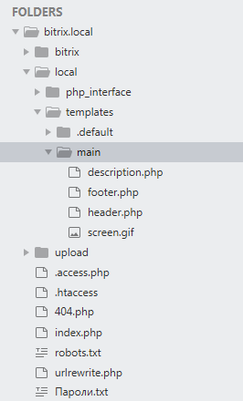

После установки битрикса оставим примерно вот такие файлы и папки. Чтобы начать натягивать вёрстку создадим папку local, а в local создадим папку templates. В templates будут хранится шаблоны нашего сайта.

А вообще битрикс по умолчанию помещает шаблоны по пути /bitrix/templates, но с какой то версии была введена возможность создавать папку local и хранить в ней наш сайт.
Тепрь создадим в local/templates папку с названием нашего сайта, например, main. И начнём добавлять в него файлы. Давайте первым файлом добавим description.php. Этот файл позволяет кратко описать наш шаблон сайта, для того чтобы потом в админке по этому описанию выбирать какой шаблон подключить:
<?php
$arTemplate = [
'NAME' => 'Основной шаблон Main',
'DESCRIPTION' => 'Описание шаблона Main ...'
];
?>
Чтобы для сайта установить наш шаблон-вёрстку, пройдём в админку и по пути Настройки -> Настройки продукта -> Список сайтов откроется табличка со списком сайтов. У нас там будет один сайт с id - s1, жмём на него и в открывшихся настройках опускаемся вниз до настроки Шаблон сайта, и в вехней строке выберем наш шаблон из списка. Всё, мы подключили к сайту наш шаблон:

Далее создадим ещё 2 файла - header.php и footer.php, также нужно сюда же добавить скриншот нашего шаблона. Скриншот дожен быть 800х600 и расширение .gif. Вот что получилось:
Эта папка есть в ядре bitrix. Я также добавил её в папку local как видно из картинки выше. В ней создал файл init.php, этот файл выполнится до того как подгрузится наш сайт, а значит в этом файле можно задать какие нибудь свои пользовательские функции, константы, переменные, которые уже будут доступны в коде последующих загружаемых файлах. Вот что лежит пока в файле init.php:
<?php
use Bitrix\Iblock\IblockTable;
use Bitrix\Main\Loader;
//Определим свою константу, в которой будет лежать путь до папки .default
define("DEFAULT_TEMPLATE_PATH", "/local/templates/.default");
//Функция выводит красиво массивы
function debug($data){
echo '<pre>';
var_dump($data, 1);
echo '</pre>';
}
//Функция получает id инфоблока по его символьному коду
function getIblockIdByCode(string $code): int
{
Loader::includeModule('iblock');
$iblock = IblockTable::getList([
'filter' => [
'CODE' => $code,
],
'select' => [
'ID',
'CODE',
],
])->fetch();
if (!isset($iblock['ID'])) {
throw new Exception("Не найден инфоблок с кодом {$code}");
}
return (int) $iblock['ID'];
}
Для одного сайта могут использоваться несколько шаблонов. Например, на главной странице нет сайдбара, а на других есть, поэтому могут быть несколько папок с шаблонами, но стили для всех этих шаблонов одни и те же. Чтобы не копировать стили во все шаблоны, можно создать рядом с шаблонами папку .default и в неё сложить все наши стили, скрипты, картинки:

Видно что style.css лежит не в папке css, не обращаем внимания, так вёрстка сделална просто.
Но теперь нельзя подключить наши скрипты и стили в файле header.php через константу SITE_TEMPLATE_PATH, для этого в init.php я создал свою константу DEFAULT_TEMPLATE_PATH, которая будет вести до папки .deafult, чтобы подключить скрипты и стили буду использовать её.
header.php и footer.php всегда подгружаются из шаблона сайта, а контент из файлов-страниц
Теперь из вёрстки нужно вынести повторяющийся html код в header.php и в footer.php. Оставшийся код в index.html это и будет содержимым, которое будет менятся, его перемещаем в index.php и подключаем вверху header.php таким кодом:
require($_SERVER["DOCUMENT_ROOT"]."/bitrix/header.php");
И footer.php таким же кодом:
require($_SERVER["DOCUMENT_ROOT"]."/bitrix/footer.php");

<?php
require($_SERVER["DOCUMENT_ROOT"]."/bitrix/footer.php");
$APPLICATION->SetTitle("Главная");
$APPLICATION->SetPageProperty("TITLE", "Digital-агентство WeCoders");
$APPLICATION->SetPageProperty("keywords", "о нас, о компании, we coders, сайты");
$APPLICATION->SetPageProperty("description", "о нашей компании");
?>
<p>Содержимое на главной</p>
<?php
require($_SERVER["DOCUMENT_ROOT"]."/bitrix/footer.php");
?>
header.php
Подключим в файле header.php наши стили, скрипты, и остальные meta данные:
<?php if(!defined("B_PROLOG_INCLUDED") || B_PROLOG_INCLUDED!==true) die(); ?>//защита от открывания этого файла отдельно от index.php
<?php
use Bitrix\main\Page\Asset;//подключили класс Asset
?>
<html class="no-js" lang="en">
<head>
<title><?php $APPLICATION->ShowTitle(); ?></title>
<link rel="shortcut icon" type="image/x-icon" href="/img/favicon.png">
<?php
Asset::getInstance()->addCss(DEFAULT_TEMPLATE_PATH . '/css/bootstrap.min.css');
Asset::getInstance()->addCss(DEFAULT_TEMPLATE_PATH . '/css/owl.carousel.css');
Asset::getInstance()->addCss(DEFAULT_TEMPLATE_PATH . '/css/animate-text.css');
Asset::getInstance()->addCss(DEFAULT_TEMPLATE_PATH . '/css/magnific-popup.css');
Asset::getInstance()->addCss(DEFAULT_TEMPLATE_PATH . '/css/et-line.css');
Asset::getInstance()->addCss(DEFAULT_TEMPLATE_PATH . '/css/pe-icon-7-stroke.css');
Asset::getInstance()->addCss(DEFAULT_TEMPLATE_PATH . '/css/shortcode/shortcodes.css');
Asset::getInstance()->addCss(DEFAULT_TEMPLATE_PATH . '/css/meanmenu.min.css');
Asset::getInstance()->addCss(DEFAULT_TEMPLATE_PATH . '/css/font-awesome.min.css');
Asset::getInstance()->addCss(DEFAULT_TEMPLATE_PATH . '/style.css');
Asset::getInstance()->addCss(DEFAULT_TEMPLATE_PATH . '/css/responsive.css');
Asset::getInstance()->addJs(DEFAULT_TEMPLATE_PATH . '/js/vendor/modernizr-2.8.3.min.js');
Asset::getInstance()->addJs(DEFAULT_TEMPLATE_PATH . '/js/vendor/jquery-1.12.0.min.js');
Asset::getInstance()->addJs(DEFAULT_TEMPLATE_PATH . '/js/bootstrap.min.js');
Asset::getInstance()->addJs(DEFAULT_TEMPLATE_PATH . '/js/owl.carousel.min.js');
Asset::getInstance()->addJs(DEFAULT_TEMPLATE_PATH . '/js/jquery.counterup.min.js');
Asset::getInstance()->addJs(DEFAULT_TEMPLATE_PATH . '/js/waypoints.min.js');
Asset::getInstance()->addJs(DEFAULT_TEMPLATE_PATH . '/js/jquery.magnific-popup.min.js');
Asset::getInstance()->addJs(DEFAULT_TEMPLATE_PATH . '/js/jquery.mixitup.min.js');
Asset::getInstance()->addJs(DEFAULT_TEMPLATE_PATH . '/js/jquery.meanmenu.js');
Asset::getInstance()->addJs(DEFAULT_TEMPLATE_PATH . '/js/jquery.nav.js');
Asset::getInstance()->addJs(DEFAULT_TEMPLATE_PATH . '/js/jquery.parallax-1.1.3.js');
Asset::getInstance()->addJs(DEFAULT_TEMPLATE_PATH . '/js/animate-text.js');
Asset::getInstance()->addJs(DEFAULT_TEMPLATE_PATH . '/js/plugins.js');
Asset::getInstance()->addJs(DEFAULT_TEMPLATE_PATH . '/js/main.js');
Asset::getInstance()->addString('');
Asset::getInstance()->addString('');
//если есть подключение шрифтов по CDN, то также через addString как и viewport помещаем весь тег link в скобки в этот метод.
?>
<?php $APPLICATION->ShowHead();//вернёт все мета теги нужные для сайта ?>
</head>
<body>
<div id="panel"><?php $APPLICATION->ShowPanel(); ?></div>
Также есть другой синтаксис подключения скриптов и стилей без помощи класса Asset, а с помощью объекта $APPLICATION:
<?php
$APPLICATION->SetAdditionalCSS(SITE_TEMPLATE_SITE . '/css/style.css');
$APPLICATION->AddHeadScript(SITE_TEMPLATE_SITE . '/js/script.js');
?>
footer.php
В этом файле в принципе только html и защита.
По этой ссылке можно почитать про свойства настроечного массива при подключении компонента-меню.
Итак начнём натягивать меню. Сначала проанализируем где у нас меню в вёрстке. Я натягиваю вёрстку Coders, в ней 2 меню, в шапке:

И в подвале:

Эти меню немного отличаются поэтому буду делать 2 разных меню. Идём в админку по пути Настройки -> Настройки модулей -> Управление структурой и пролистав немного вниз есть подраздел Настройки для сайтов, в нём в пункте Типы меню создадим 2 типа меню - top->Верхнее меню и bottom->Нижнее меню:

И жмём сохранить. Всё теперь идём в публичную часть сайта. Для того чтобы нам сделать меню выводимое битриксом нужно подключить компонент меню. Где взять этот компонент? Создадим тестовую страницу, для этого мжём на панели Создать страницу, в открывшемся окне обзовём её Тестовая страница, имя файла - test.php, уберём галочку Добавить в пункт меню и жмём Далее:

Затем ещё раз Далее и Готово. Откроется окно редактирования этой страницы, сотрём всё что там написанно и теперь нужно разместить компонент меню и настроить его. Для этого справа есть выдвигающееся меню компонентов, нужный нам лежит в Служебные -> Навигация -> Меню. Хватаем его мышкой и переносим влево в код и жмём по нему 2 раза, чтобы перейти к его настройке:

В открывшемся окне настроек первым пунктом стоит Шаблон компонента, это то место где лежит php код, который сгенерирует html нашего меню. По умолчанию он лежит в папке .defaul в ядре bitrix/components/bitrix/menu/templates/.default/template.php. Пока оставим этот шаблон по умолчанию. Потом мы его скопируем к себе в папку main и настроим под себя. Далее для пункта Тип меню первого уровня выберем ранее созданное название в админке Верхнее меню:

Пролистаем ниже и снимем галочку с Учитывать права доступа, так как у нас сайт без авторизации, то наше меню будет доступно для всех пользователей. Листаем дальше вниз и в Пункте Уровень вложенности меню поставим 2, так как у нас есть пункты в меню, которые имеют подменю. Пока остальное не меняем и жмём Сохранить и Сохранить. Мы находимся на странице test.php и пока не видим ничего. Начнём добавлять пункты для меню. Для этого жмём Создать раздел и в открывшемся окне вводим Заголовок раздела - Главная, имя папки на анг. пусть будет так как сам битрикс перевёл, галочки не снимаем и жмём Далее. Во 2м окне Имя нового Пункта - Главная, Тип меню - Верхнее меню, Вставить последним пунктом и опять Далее. В новом окне надо ввести свойства раздела, пока во всех пунктах вставим слово Главная и жмём Готово. нас перекинет скорее всего на созданный раздел, но в строке запроса вводим наш файл test.php и переходим на него и видим, что появился первый пункт меню Главная. Таким способом создадим все пункты меню и должно получиться такое:

В панели есть такая кнопка как Меню и нажав на неё откроется такое окно:

В этом окне можно изменять имена разделов, менять их местами, удалять.
Есть другой путь создания меню. После того как я создал первый пункт меню Главная, то в структуре файлов и папок появился такой файл top.menu.php, в нём в виде массива описываются имена разделов и путь к этому разделу. Так вот можно заполнить этот файл нужными разделами с их путями и на странице test.php эти пункты меню отобразятся. Единственное, что они пока никуда не приведут, потому как в структуре файлов не созданны для них одноимённые папки с индексовым файлом внутри. Можно создать все эти папки и файл index.php внутри них. В файле index.php нужно будет подключить шапку и подвал и прописать некоторые свойства:

Продолжим по первому пути, где я создавал каждый раздел с помощью панели. Наше меню надо теперь как то привести к виду нашего меню из вёрстки. Для этого в панели включаем режим правки и наводим мышкой на наше меню, появятся спец инструменты для настройки меню, наведём мышкой на стрелочку , откроется подменю и как показано на картинке нажмём на Копировать шаблон компонента:

Откроется окно, где введём наше название компонента top_menu и поставим галочку сохранить его к нам в шаблон main, галочки ниже можно поснимать:

Как видно в структуре файлов в ашем шаблоне main появилась папка components, в ней и находится наш скопированный шаблон меню по пути components/bitrix/menu/top_menu/template.php. Для создания нашего меню нам пока нужен только файл template.php, остальные фалы и папки можно удалить:

Теперь нужно к нашему меню применить наш скопированный шаблон, для этого идём в публичную часть сайта и в режиме правки жмём на шестерёнку и в открывшемся окне выберем в пункте Шаблон компонента наш компонент top_menu:

Сохраним и видим что с меню слетели все стили, потому что я удалил все стили и др. файлы в нашем скопированном компоненте. И теперь надо в шаблоне template.php подставить наш html код меню из вёрстки в php код, который в цикле выводит меню. Вот что получилось у меня:

И теперь меню стало похоже на оригинал:

В template.php есть такой массив как $arResult. В нём в подмасиивах лежат все наши созданные пункты меню, разная инфа о пунктах меню разложенна по элементам подмассивов вот так:

Ну что, наш тестовый компонент вроду готов, теперь его нужно переместить в header.php вместо старой вёрстки меню. Для этого откроем файл test.php и вырежем оттуда php код подключения компонента:

И вставим его в header.php вот так:

Всё, меню-вёрстка заменилась на редактируемое меню из битрикса.
Следующее это натянуть нижнее меню. С нижним меню все операции те же что и с верхним, только подключаем уже в настройках Нижнее меню, ну и если оба этих меню ссылаются на одни и те же страницы, то для нижнего меню можно скопировать файл top.menu.php в файл bottom.menu.php. Только надо первый пункт создать через админку, создавая раздел, битрикс создаст файл bottom.menu.php, а дальше можно уже копирнуть остальное.
Немного по другому создаётся меню. Смотреть в видео
Создаём верхнее многоуровневое меню
Если в php коде сделать ошибку, то битрикс вместо сообщения об ошибке выдасть сообщение, что ошибки отключены и если мы хотим их включить, то надо изменить кое что в файле settings.php, Файл этот находится по пути bitrix/settings.php. Изменять его можно только когда разрабатывается сайт. В этом файле различные настройки в массивах, через поиск ищем свойство в массиве - debug и ставим ему значение true.
Инфоблоки работают с базой данных, через инфоблоки удаляются данные из БД, сохраняются, изменяются. Инфоблок в админке это своего рода заркало БД.
Итак у нас на главной странице есть слайдер, нужно картинку и внутренние данные слайдера выводить из инфоблока. Для этого идём в админку битрикса в раздел Контент, что слева вверху в меню. В контенте жмём на стрелку Инфоблоки -> Типы инфоблоков и в открывшемся окне жмём Добавить новый тип. Типы инфоблоков нужны для хранения однородных инфоблоков. Откроется другое окно, где введём Идентификатор латинскими буквами без пробелов - content. Ниже введём по-русски - Контент и по англ. - Content. Всё, сохраняем. Теперь в Типах инфоблока появился новый тип Контент, жмём на него и в окне справа жмём Добавить инфоблок. Откроется большое окно с табами по настройке инфоблока. Рассмотрим некоторые из настроек.
Вкладка Инфоблок
Вкладка SEO. Здесь задаются шаблоны, по которым будут генерироваться парамеры для SEO
Вкладка Поля. Тут настраиваем поля для элементов инфоблока
Вкладка Свойства
Вкладка Доступ
После настройки инфоблока, сохраняем его и переходим к его заполнению элементами(записями)
Перейдём в созданный инфоблок, он находится в Типе инфоблока Контент:

И жмём Создать элемент. Для элементов также откроется окно со вкладками. Пробежимся слегка по пунктам этих вкладок.
Вкладка Элемент. Поля выделенные жирным шрифтом обязательны.

Вкладка Анонс.
Вкладка Подробно.
Теперь нам надо определиться какие данные из слайда мы разложим по полям во вкладках. Если посмотреть на слайд, то у нас есть по центру текст с меньшим размером шрифта, его поместим в Название вкладки Элемент. Затем под этим текстом есть текст по крупнее, его поместим в Описание для анонса во вкладке Анонс. Для кнопки, ниже крупного текста, создадим дополнительное поле во вкладке Свойства инфоблока с Названием - Ссылка и в эту ссылку поместим значение href этой кнопки, а текст кнопки разместим в подробном описании вкладки Подробно:

У вкладки Свойства есть такой пункт как Обязательное это доп. поле будет или нет, галочку не ставим, потому что у нас есть слайды, на которых нет этого доп. поля Ссылка.
После того как заполнены все элементы, их у нас 3 шт:

Итак, хранилище для данных слайдера мы создали, пришло время вывести данные из инфоблока на главную страницу в публичной части сайта. Для этого идём в публичную часть и жмём Изменить страницу(можно это сделать на тестовой странице, а можно сразу подключить компонент на главную, я буду сразу на главную.), появится окно редактирования этой страницы и перетаскиваем мышкой компонент Список новостей из меню справа, который находится по пути Контент -> Новости -> Список новостей. Автоматом или 2 раза машкой по вынесенному компоненту, откроется окно настройки данных для компонента:
На странице видим вывелись элементы списком вниз. Теперь нам надо подключить и настроить свой шаблон, для этого в публичной части через Режим правки копируем стандартный шаблон в нашу папку main и обзываем его main_slider
Теперь идём в наш скопированный шаблон template.php и нужно нашу вёрстку слайдера встроить в этот шаблон, вот так:
<?if(!defined("B_PROLOG_INCLUDED") || B_PROLOG_INCLUDED!==true)die();
/** @var array $arParams */
/** @var array $arResult */
/** @global CMain $APPLICATION */
/** @global CUser $USER */
/** @global CDatabase $DB */
/** @var CBitrixComponentTemplate $this */
/** @var string $templateName */
/** @var string $templateFile */
/** @var string $templateFolder */
/** @var string $componentPath */
/** @var CBitrixComponent $component */
$this->setFrameMode(true);
?>
<?php if(!empty($arResult["ITEMS"])):?>
<section class="slider-area">
<div class="slider-active">
<?foreach($arResult["ITEMS"] as $arItem):?>
<div class="single-slider">
<?if($arParams["DISPLAY_PICTURE"]!="N" && is_array($arItem["PREVIEW_PICTURE"])):?>
<div
class="slider-img parallax-bg bg-opacity-black-60"
style="background:url()">
</div>
<?endif?>
<div class="slider-content slider-style-2 slider-style-4 text-center z-index-5">
<?if($arParams["DISPLAY_NAME"]!="N" && $arItem["NAME"]):?>
<span></span>
<?endif;?>
<?if($arParams["DISPLAY_PREVIEW_TEXT"]!="N" && $arItem["PREVIEW_TEXT"]):?>
<h2><?echo $arItem["PREVIEW_TEXT"];?></h2>
<?endif;?>
<?if(!empty($arItem["DISPLAY_PROPERTIES"])):?>
<a class="my-button" href="<?=$arItem["DISPLAY_PROPERTIES"]["LINK"]["DISPLAY_VALUE"];?>"><?=$arItem["DISPLAY_PROPERTIES"]["TEXT_LINK"]["DISPLAY_VALUE"];?></a>
<?endif;?>
</div>
</div>
<?endforeach;?>
</div>
</section>
<?php else:?>
<?= "Массив пуст";?>
<?php endif;?>
Несколько раз у меня выводились слайды как то не правильно, всё дело было в теге P, который битрикс в шаблоне по умолчанию тулит, вот как он выглядит, я его удалил и вроде все слайды стали нормально отображаться:
<p class="news-item" id="GetEditAreaId($arItem['ID']);?>">
Как узнаю для чего этот тег нужен, то допишу. Код php и этот тег:
<?
$this->AddEditAction($arItem['ID'], $arItem['EDIT_LINK'], CIBlock::GetArrayByID($arItem["IBLOCK_ID"], "ELEMENT_EDIT"));
$this->AddDeleteAction($arItem['ID'], $arItem['DELETE_LINK'], CIBlock::GetArrayByID($arItem["IBLOCK_ID"], "ELEMENT_DELETE"), array("CONFIRM" => GetMessage('CT_BNL_ELEMENT_DELETE_CONFIRM')));
?>
<p class="news-item" id="GetEditAreaId($arItem['ID']);?>">
Нужны для того чтобы в публичной части иметь возможность редактировать слайды через режим правки, но это не рекомнедуется. Пока мы разрабатываем можно оставить этот код, но потом лучше убрать. И чтобы тег P не сбивал вёрстку надо удалить его и его атрибут id со значением внутри нужно перенести на наш тег из вёрстки, который является оборачивающим для повторяющихся слайдов. В моём случае это тег:
<div class="single-slider"></div>
Добавляем нашему тегу id:
<div class="single-slider" id="GetEditAreaId($arItem['ID']);?>"></div>
Всё, теперь будет и режим правки работать нормально и вёрстка не собьётся.
Как можно заметить, то у главной страницы фон шапки черный и прозрачный, а у других страниц он белый. Это задаётся разными классами у тега header в header.php - это transparent-header и white-bg. Идём в header.php и в теге header вместо этих класов пишем код:
<header id="sticky-header" class="header-area header-wrapper GetCurDir() === '/') ? transparent-header : white-bg?>">
...
</header>
Функция $APPLICATION->GetCurDir() возвращает строку, которая говорит в какой папке мы сейчас находимся. Если вернётся '/', то мы в корне сайте, т.е. на главной странице, если нет, значит мы на любой другой странице, где фон хедера должен быть белым.
На сайте не всё можно вывести с помощью компонента "bitrix: news.list", ну или можно но лучше использовать для таких целей специально предназначенные компоненты, например "bitrix: main.include". Этот компонент даёт возможность сделать какой нибудь текст или картику быть редактируемыми. Вот например в нашей вёрстве есть такая секция:

Сделаем так, чтобы можно было включить Режим правки и прямо в публичной части изменить заголовок, текст или картинку. Такой компонент хранит данные не в БД, а в файлах, содержимое которых мы и будем изменять. Почему сразу не вынести весь блок в компонент? Для того чтобы у управляющего содержимым не было возможности изменять вёрстку, поэтому и выносим каждый кусочек по отдельности.
Начнём с заголовка. Чтобы добавить компонент на страницу жмём Изменить страницу и справа добавим этот компонент. Он находится по пути Служебные -> Включаемые области -> Вставка включаемой области. Перетаскиваем его и откроется окно настроек:
Итак настроем для начала режим для страницы. При этом режиме файл с содержимым, который будет подключаться, ищется в той же папке где и сама страница, на которой расположен код подключения компонента, в нашм случае это index.php, а значит файл должен иметь в названии слово index и плюс через нижнее подчёркивание прибавляем суффикс, задаваемый в настройках. Создадим в корне нашего сайта файл index_суффикс.php, вместо слова ""суффикс" понятно вставим наше осмысленное слово:

И теперь в этот файл(index_суффикс.php) вынесем из вёрстки тег h2 вместе с текстом заголовка:

Далее код подключения компонента разместим в том месте, откуда мы убрали заголовок:
<?$APPLICATION->IncludeComponent(
"bitrix:main.include",
"",
Array(
"AREA_FILE_SHOW" => "page",
"AREA_FILE_SUFFIX" => "title"
)
);?>

Заметим что в массиве настройки для компонента заданы слова page(для страницы) и суффикс title. Проверяем на сайте как работает. Жмём Режим правки и наводим на заголовок, появится окошко правки данного участка. Можно нажать Изменить область и откроется окно для измененения текста заголовка или можно нажать шестерёнку и откроется окно с настройками компонента.
С другими 2мя частями - текстом и картинкой проделываем те же действия. Добавляем компонент, настраиваем его также, только суффикс другой пишем, создаём файл, выносим в него вёрстку и на место вёрстки пишем код с подключением компонента:

Рассмотрим режим из файла. Если выбрали этот режим в настроках компонента, то вместо ввода суффикса появляется поле вводя пути до файла включаемой области относительно корня сайта. Этот режим хорошо подходит для участков вёрстки, содержимое которых одинакого на всех странцах сайта, то есть не привязано конкретно к странице как в примере выше. Таким участком вёрстки можно взять верхнюю строку сайта, где указаны почта, телефон и соцсети, они указаны на всех страницах сайта, кроме главной. Вёрстка этой строки находится в файле about_us.html. Копируем её и переносим в header.php нашего шаблона и вставляем до шапки:

И также сделаем условие отображения этого участка кода, если находимся на главной, то не отображать эту строку и наоборот. Итак во включаемую область нужно вынести текст, который лежит между span, это почта и телефон. У человека, который будет править эти области будет возможность изменить иконку и текст:

Ещё одно замечание, так как мы находимся в header.php, а он находится в нашем шаблоне сайта, и в нём добавляем включаемые области, то файлы с включаемыми областями надо хранить в папке, которая должна находится в нашем шаблоне. Для этого создадим папку includes прямо в нашем шаблоне main_template. Теперь в папке includes создадим 2 файла по количеству включаемых областей. 1й это header_mail.php 2й header_phone.php и раскидаем в них соответсвующие вёрстки. Такие названия для файлов, которыми мы обозвали эти 2 файла, не обязательны, можно назвать как угодно, просто по смыслу называем так. Первая часть названия это файл, к которому они относятся, вторая часть это элемент вёрстки, к которому они относятся, повторю эти названия мы сами называем как удобно.
Далее нужно взять код подключения копмонента, для этого идём на страницу любую нашего сайта и жмём Изменить страницу, затем вынесем компонент включаемая область куда нибудь и настроем его на режим - из файла, всё сохраняем и идём в текстовый редактор на ту страницу куда выносил компонент, копируем его и вставляем в файл header.php туда, откуда были вырезаны куски с почтой и телефоном. Должно получится так:

<?$APPLICATION->IncludeComponent(
"bitrix:main.include",
"",
Array(
"AREA_FILE_SHOW" => "file",
"PATH" => SITE_TEMPLATE_PATH . "/includes/header_mail.php"
)
);?>
На странице О нас также есть точно такой же блок из 3 частей - заголвок, текст и картинка. Также применяем тут компонент включаемых областей в режиме для страницы, все файлы тут также привязываем к странице, на которой находится компонент, а это тоже index.php в папке about:

Единственное что можно было бы сделать по другому, то это задать суффикс немного другой, например about_title(index_about_title.php) и к другим также добавить слово about для большей ясности к какой странице относятся эти включаемые области.